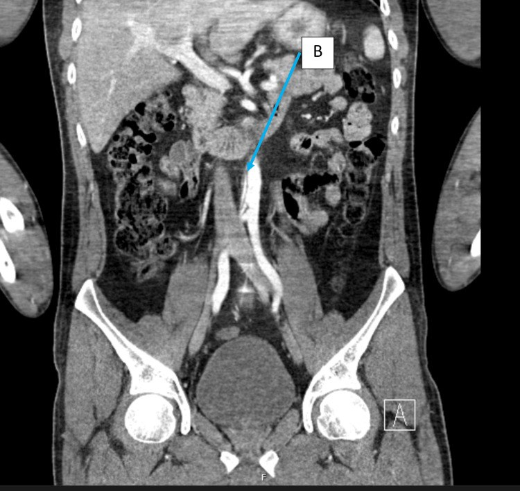
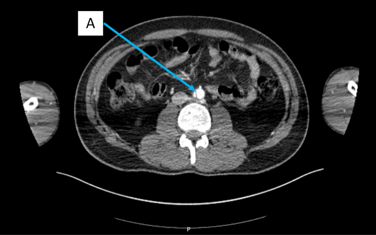
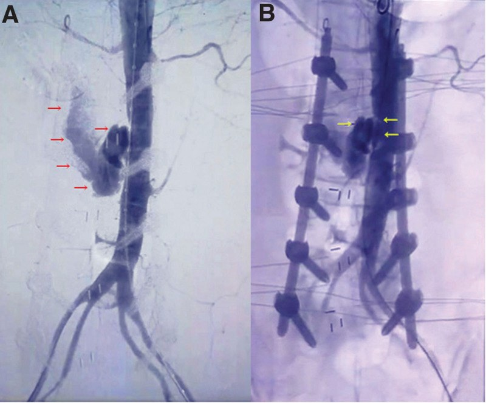

1807 — Bóc tách động mạch chủ bụng do chấn thương & sau thủ thuật / Traumatic and iatrogenic abdominal aortic injury
Tags: pattern:boc-tach pattern:vat-noi-mac vung:DMC-bung score:Shalhub-Rabin protocol:CTA-2-thi
Mức chắc chắn (certainty): tổng hợp y văn (literature synthesis) — số liệu chủ yếu từ tổng quan hệ thống 133 bệnh nhân chấn thương ĐMC bụng kín (tổng quan Biomol Biomed 2024, PMC11088888), ca nguyên văn có ảnh CT (Cureus 2024, PMC11261995), ca tổn thương ĐMC bụng do phẫu thuật cột sống có ảnh DSA (Medicine 2022, PMC9439786) và tổng quan chiến lược xử trí chấn thương mạch bụng (Front Surg 2018, PMC5826055). Đây là bệnh hiếm, không có thử nghiệm ngẫu nhiên — mọi ngưỡng điều trị dưới đây là đồng thuận từ loạt ca, ghi rõ khi chưa có số.
1. Tổng quan bệnh học – cơ chế hình ảnh
- Tần suất: chấn thương ĐMC bụng kín (blunt abdominal aortic injury, BAAI) chiếm 4–6% tổng số chấn thương ĐMC và < 1% tổng số chấn thương kín (PMC11088888). Trong chấn thương kín nói chung, bóc tách ĐMC do chấn thương gặp ở 1,79% bệnh nhân, và tới 80% tử vong trước khi tới viện (PMC11261995).
- Vì sao hiếm nhưng chết người: đoạn ĐMC bụng cố định giữa cột sống và phúc mạc, động mạch được "neo" bởi các nhánh tạng — lực giảm tốc và lực ép không giải toả được mà truyền trực tiếp vào thành mạch. Tử vong trong y văn 17–92%; trong loạt hệ thống 133 ca, tử vong tối thiểu 15,3% (19/133) (PMC11088888).
- Cơ chế tổn thương theo thứ tự: rách nội mạc → máu vào lớp áo giữa tạo vạt nội mạc (intimal flap) và lòng giả; hoặc máu tụ trong thành (intramural haematoma) không có vạt; hoặc phình giả (pseudoaneurysm) khi vết rách bị mô quanh mạch bọc lại; nặng nhất là đứt/viêm tắc hoàn toàn gây thiếu máu chi cấp. Máu tụ hậu phúc mạc có thể tự cầm (tamponade) — vì thế bệnh nhân có thể tới viện với huyết áp bình thường rồi sụp.
- TẠI SAO vị trí hay gặp là hạ vị (infrarenal): 88,3% tổn thương nằm ở vùng III (từ dưới động mạch thận đến chỗ chia đôi) trong loạt 133 ca (PMC11088888); vùng I (cơ hoành → động mạch mạc treo tràng trên) và vùng II (mạc treo tràng trên → động mạch thận) khó kiểm soát hơn khi mổ mở nên tử vong cao hơn.
- TẠI SAO hình ảnh trông như vậy: vạt nội mạc là đường mảnh giảm tỷ trọng (< 100 HU, không ngấm thuốc) nằm trong lòng mạch đã ngấm thuốc, chia lòng thật/lòng giả — nguyên nhân là màng nội mạc bị bóc, không có mạch nuôi. Máu tụ trong thành/hậu phúc mạc là khối 35–70 HU không ngấm thuốc; phình giả là túi ngấm thuốc song song và muộn hơn lòng mạch (không "rửa trôi" cùng lòng thật) — chính là dấu hiệu dùng để phân biệt với thoát mạch hoạt động (active extravasation), vốn đổi hình giữa các thì và lan rộng ra ngoài.
- TẠI SAO bỏ sót (con số): 11,8% bệnh nhân có biểu hiện muộn sau 24 giờ, 4,2% hoàn toàn không có biểu hiện cấp; có 3 ca chỉ được chẩn đoán sau 7 tháng, 8 năm và 9 năm (PMC11088888). Lý do: đau do gãy cột sống/khung chậu che lấp đau do mạch, và CT được đọc tập trung vào xương.
- Nhánh "sau thủ thuật" (iatrogenic): tổn thương mạch lớn trong phẫu thuật cột sống thắt lưng gặp ~0,04%, tử vong 15–61%, và phần lớn ở tầng L4–L5 vì đĩa đệm sát ĐMC/ĐM chậu (PMC9439786). Nguồn khác: dụng cụ can thiệp (guidewire, catheter, stent-graft) và vết rách do bơm bóng ở ĐMC/ĐM chậu; cần phân biệt với bóc tách tự phát (bài 171), nơi không có tiền sử chấn thương/thủ thuật.

Nam 30 tuổi, ngã từ độ cao 3 m, gãy mâm trên L1–L3: CT có cản quang, mặt phẳng coronal — vạt nội mạc (mũi tên xanh, B) trong ĐMC dưới động mạch thận; không có máu tụ hậu phúc mạc, không thoát thuốc. Nguồn: Cureus 2024;16(6):e62899 (PMC11261995), Fig. 2, CC BY 4.0.2. Mẫu hình + chẩn đoán phân biệt theo vị trí (gamut)
Mẫu hình gợi ý: bệnh nhân chấn thương giảm tốc/đai an toàn (tai nạn xe, ngã cao, đè ép), gãy cột sống thắt lưng hoặc khung chậu, huyết áp không ổn định không giải thích được hoặc thiếu máu chi dưới, trên CT bụng có vạt nội mạc/phình giả/máu tụ quanh ĐMC.
Gamut theo cơ chế (mnemonic "CHẤN–THỦ–TỰ–VIÊM"):
- CHẤN (traumatic): rách nội mạc đơn thuần, máu tụ trong thành, phình giả, đứt/viêm tắc. Đi kèm tổn thương tạng bụng 66,9%, cột sống thắt lưng 25,6%, ống tiêu hoá 49,6% (PMC11088888).
- THỦ (iatrogenic): sau phẫu thuật cột sống (dụng cụ/đĩa đệm), sau đặt catheter/stent-graft, sau bơm bóng nong, sau sinh thiết/phẫu thuật sau phúc mạc. Cơ chế: chọc trực tiếp hoặc rách do lực kéo ở chỗ mạch bị cố định.
- TỰ (spontaneous): bóc tách ĐMC bụng đơn độc (IAAD) — không có chấn thương, thường đau lưng/đau bụng, tăng huyết áp; xem bài 171.
- VIÊM/khác: loét xuyên mảng xơ vữa (PAU) tiến triển, nhiễm khuẩn động mạch (mycotic), bệnh mô liên kết (Marfan/Ehlers–Danlos mạch).
Gamut theo hình thái trên CT (quyết định xử trí):
- Chỉ vạt nội mạc, không hẹp lòng, không máu tụ → thể nhẹ nhất, thường theo dõi.
- Máu tụ trong thành → nguy cơ tiến triển thành phình giả/đứt.
- Phình giả < 50% / > 50% chu vi → tăng dần nguy cơ vỡ, thường cần can thiệp.
- Tắc/đứt lòng mạch + thiếu máu chi → cấp cứu, tử vong và mất chi cao.
3. Bảng so sánh phân biệt (ma trận đối chiếu)
| Thực thể (entity) | Hình ảnh điển hình | Chốt vào (rule-in) | Chốt loại (rule-out) | Gợi ý xác nhận |
|---|---|---|---|---|
| Rách nội mạc do chấn thương | Đường mảnh giảm tỷ trọng trong lòng mạch ngấm thuốc, hạ vị; ± máu tụ hậu phúc mạc | Tiền sử giảm tốc/đai an toàn + vạt nội mạc + gãy cột sống/thận–lách đi kèm | Không tiền sử chấn thương, vạt nội mạc ở người tăng huyết áp → nghĩ IAAD tự phát | CTA lát mỏng thì động mạch; so sánh 2 thì |
| Phình giả do chấn thương/thủ thuật | Túi ngấm thuốc song song lòng mạch, cổ rõ, có thể vôi hoá viền | Túi thuốc giữ nguyên hình giữa các thì + cổ tiếp nối lòng mạch | Thoát thuốc lan rộng, đổi hình giữa các thì → thoát mạch hoạt động, cấp cứu | CTA 2 thì (động mạch + muộn 60–70 giây); DSA khi cần can thiệp |
| Máu tụ trong thành (IMH) | Dày thành đồng/tăng tỷ trọng không ngấm thuốc, dạng liềm, ± vạt mảnh | Dày thành dạng liềm, không ngấm thuốc, ± vôi hoá bị đẩy vào trong (ngưỡng mm chưa thống nhất — ghi chưa rõ) | Có vạt nội mạc rõ + lòng giả → bóc tách thực sự | CTA không cản quang + có cản quang; MRI T1 không fat-sat |
| Bóc tách tự phát (IAAD) | Vạt nội mạc, thường kèm huyết khối lòng giả, không máu tụ quanh mạch | Đau lưng/bụng + tăng HA + không chấn thương, không thủ thuật | Có chấn thương/đụng dập thành bụng → không gọi tự phát | CTA; theo dõi bài 171 |
| Tổn thương do phẫu thuật cột sống | Máu tụ quanh ĐMC/ĐM chậu, thoát thuốc hoạt động trên DSA, hoặc phình giả tại tầng mổ | Tụt HA + giảm Hb sau mổ cột sống, đặc biệt L4–L5 | HA ổn định, Hb không đổi, CT sạch → không phải | DSA chẩn đoán + điều trị một thì (stent-graft/coil) |
| Đứt/viêm tắc ĐMC (seat-belt) | Mất tín hiệu lòng mạch dưới chỗ tắc, thành mạch đụng dập, chi dưới thiếu máu | Thiếu máu chi dưới cấp + đai an toàn + mất liên tục lòng mạch | Lòng mạch thông suốt hai bên chỗ hẹp → không phải tắc | CTA; DSA; đo áp lực chi |
| Giả ảnh do chuyển động/vật liệu | Đường thẳng sắc nét không theo trục mạch, lặp lại ở nhiều lớp | Đường không đổi giữa 2 thì, không thấy trên mặt phẳng trực giao | Đường thấy trên cả 3 mặt phẳng và giữa các thì → vạt thật | Dựng lại MPR; chụp lại nếu nghi |

Cùng bệnh nhân: mặt phẳng axial — ĐMC bụng nhỏ (giảm thể tích tuần hoàn), vạt nội mạc (mũi tên A) chia lòng mạch; không có máu tụ hậu phúc mạc. Nguồn: Cureus 2024;16(6):e62899 (PMC11261995), Fig. 1, CC BY 4.0.4. Protocol chụp + hệ phân độ/điểm chuẩn hóa
Protocol CTA (chấn thương):
- Lát cắt ≤ 1 mm, dựng MPR axial + coronal + sagittal và MPR theo trục mạch (curved planar).
- Hai thì: thì động mạch (bolus track, ~25–35 giây) để thấy vạt/phình giả, và thì muộn 60–70 giây để phát hiện thoát mạch hoạt động (khác phình giả).
- FOV từ cơ hoành đến dưới chỗ chia đôi ít nhất 5 cm (không cắt mất phần chậu khi đã thấy tổn thương hạ vị).
- Không cản quang vẫn cần để phát hiện máu tụ trong thành/vôi hoá bị đẩy; nếu bệnh nhân không chụp được 2 thì, ưu tiên thì động mạch.
- Bệnh nhân không ổn định: không đưa đi CT. Siêu âm FAST + mổ cấp cứu, hoặc phòng can thiệp (DSA) nếu nghi tổn thương mạch và bệnh nhân chịu được vận chuyển ngắn.
Phân độ (dùng trong loạt 133 ca — Shalhub cho vị trí, Rabin cho mức độ):
| Hệ | Phân loại | Ý nghĩa thực hành |
|---|---|---|
| Shalhub (vị trí) | I: cơ hoành → ĐM mạc treo tràng trên; II: mạc treo tràng trên → ĐM thận; III: dưới ĐM thận → chỗ chia đôi | 88,3% là vùng III; vùng I–II khó kiểm soát khi mổ mở, tử vong cao hơn |
| Rabin (mức độ) | A: rách nội mạc/máu tụ trong thành; B: phình giả < 50%** chu vi; **C:** phình giả **> 50% chu vi; D: tắc/đứt lòng mạch; E: vỡ | 47,0% là độ A trong loạt; độ D–E gây thiếu máu chi và là chỉ định can thiệp cấp |
Điều trị theo mức độ (ngưỡng lấy từ loạt ca, không có RCT):
- Độ A không biến chứng: theo dõi bảo tồn + kiểm soát huyết áp + CTA lặp lại để phát hiện tiến triển (khoảng cách chụp lại chưa được chuẩn hoá trong y văn — ghi "chưa rõ"). Trong loạt 133 ca, 47% ở độ A và một phần đáng kể được điều trị bảo tồn.
- Phình giả (B/C), rách có triệu chứng, hoặc thiếu máu chi: can thiệp nội mạch (stent-graft) là lựa chọn đầu tay khi giải phẫu cho phép; mổ mở khi có chỉ định kiểm soát ổ bụng (chấn thương tạng phối hợp, nhiễm trùng, không có túi phình cổ).
- Độ D/E hoặc tụt huyết áp do chảy máu: kiểm soát chảy máu ngay (bóng chèn nội mạch/REBOA + mổ hoặc stent-graft cấp cứu). Trong loạt, 55,2% mổ mở, 24,0% can thiệp nội mạch, và 64,5% được điều trị trong 3 ngày đầu; can thiệp (mở hoặc nội mạch) giảm tử vong ở nhóm có thiếu máu chi hoặc tổn thương phối hợp (P < 0,05).
- Sau can thiệp: theo dõi CTA (endoleak, hẹp nhánh tạng, huyết khối lòng giả) theo bài 172; biến chứng không tử vong 27,1%, trong đó suy thận cấp 47,8% các biến chứng; di chứng thiếu máu chi mạn 5,0%, rối loạn thần kinh 10,0%.
flowchart TD
A[Chấn thương giảm tốc hoặc sau thủ thuật + tụt HA/thiếu máu chi] --> B{Bệnh nhân ổn định?}
B -->|Không| C[Mổ cấp cứu hoặc REBOA/stent-graft cấp cứu; không đưa đi CT]
B -->|Có| D[CTA lát mỏng 2 thì: động mạch + muộn]
D --> E{Tổn thương nằm ở vùng nào và mức độ nào?}
E -->|Độ A: vạt nội mạc/IMH| F[Theo dõi bảo tồn + kiểm soát HA + CTA lặp lại]
E -->|Độ B/C: phình giả| G[Can thiệp nội mạch stent-graft nếu giải phẫu phù hợp]
E -->|Độ D/E: tắc, đứt, vỡ| H[Can thiệp cấp: stent-graft hoặc mổ mở + kiểm soát chảy máu]
F --> I[CTA theo dõi: tiến triển thành phình giả/tắc?]
I -->|Có| G
I -->|Không| J[Theo dõi lâm sàng dài hạn]
G --> K[CTA sau can thiệp: endoleak, hẹp nhánh tạng, huyết khối lòng giả]
H --> K

Nữ 73 tuổi, tụt HA 2 giờ sau mổ hàn cột sống L2–S1: (A) DSA — thoát thuốc hoạt động từ ĐMC bụng tại tầng L2–L3 (mũi tên đỏ); (B) sau đặt stent-graft phủ lỗ rách (mũi tên vàng), lưu thông tốt, bệnh nhân ra viện sau 2 tuần. Nguồn: Medicine (Baltimore) 2022;101(31):e30216 (PMC9439786), Fig. 1, CC BY 4.0.5. Biến thể bình thường và cạm bẫy
- Cạm bẫy 1 — "không có máu tụ hậu phúc mạc nên không phải chấn thương mạch": ca Cureus không có máu tụ hậu phúc mạc và không thoát thuốc, vẫn có vạt nội mạc thật. Vắng máu tụ không loại trừ.
- Cạm bẫy 2 — thoả mãn tìm kiếm (satisfaction of search): thấy gãy L1–L3 rồi dừng đọc mạch. Tỷ lệ chẩn đoán muộn 11,8%, có ca 7 tháng – 8 năm – 9 năm. Luôn đọc ĐMC/ĐM chậu trên mọi CT bụng chấn thương có gãy cột sống thắt lưng, đai an toàn, hoặc tụt HA không giải thích.
- Cạm bẫy 3 — vạt nội mạc giả do chuyển động: đường giả thẳng, sắc, không đổi giữa các thì và không thấy trên mặt phẳng trực giao; đường thật thấy trên cả 3 mặt phẳng. Dựng MPR trước khi kết luận.
- Cạm bẫy 4 — ĐMC nhỏ ở người trẻ: giảm thể tích tuần hoàn làm ĐMC nhỏ, thành mỏng — dễ bỏ vạt nội mạc; ngược lại đừng nhầm co thắt do giảm thể tích với đụng dập thành mạch (thành dày không đều mới là bất thường).
- Cạm bẫy 5 — bỏ qua nhánh "thủ thuật": sau mổ cột sống, tụt HA + giảm Hb phải nghĩ tổn thương mạch lớn (0,04%, tử vong 15–61%); DSA vừa chẩn đoán vừa điều trị. Đừng chờ CT nếu bệnh nhân không ổn định.
- Cạm bẫy 6 — đai an toàn gây tắc hoàn toàn: hình ảnh mất tín hiệu lòng mạch kèm chi dưới lạnh, mất mạch; đây là cấp cứu mạch máu, không phải "bóc tách nhẹ theo dõi".
- Biến thể bình thường: vôi hoá thành ĐMC ở người lớn tuổi tạo đường giảm tỷ trọng không đều — phân biệt bằng việc vôi hoá nằm ở thành, ngấm thuốc xung quanh, không tạo lòng giả; nếp gấp thành mạch (infolding) ở ĐMC ngực thoái hoá cũng giả vạt nội mạc, nhưng ở ngực và có bờ tròn đều.
6. Tự lượng giá — Blind Quiz ngay trên trang tĩnh
Ca 1 — Nam 30 tuổi, ngã từ cửa sổ tầng 1 (3 m), đau ngực + đau lưng; CT bụng "không bất thường". Xem 2 ảnh trước, mô tả trước.
- Gợi ý lâm sàng: huyết áp 123/77, mạch 88, bụng mềm; CT cột sống có gãy mâm trên L1–L3.
- Câu hỏi: (1) Dấu hiệu bất thường nằm ở đâu? (2) Ba chẩn đoán phân biệt? (3) Vì sao "không có máu tụ hậu phúc mạc" không loại trừ chấn thương mạch?
Bấm để hiện đáp án (findings + chẩn đoán)
- Findings: vạt nội mạc (mũi tên B) trong ĐMC dưới động mạch thận; mặt phẳng axial xác nhận vạt chia lòng mạch (mũi tên A); thành ĐMC nhỏ do giảm thể tích; không máu tụ hậu phúc mạc, không thoát thuốc.
- Chẩn đoán: bóc tách ĐMC bụng do chấn thương (rách nội mạc, Rabin A, Shalhub III) sau ngã cao, kèm gãy L1–L3.
- Vì sao: màng nội mạc bị bóc tạo đường giảm tỷ trọng trong lòng mạch ngấm thuốc; máu tụ hậu phúc mạc có thể tự cầm nên không thấy.
- Nguồn ảnh: Cureus 2024;16(6):e62899 (PMC11261995), Fig. 2 — CC BY 4.0.
Ca 2 — Nữ 73 tuổi, 2 giờ sau mổ hàn cột sống L2–S1, tụt HA 60/40 mmHg dù truyền máu. Xem DSA trước.
- Gợi ý lâm sàng: trong mổ có chảy máu nhiều ở khoang L2–L3, đã cầm tạm bằng gạc; sau mổ Hb tụt.
- Câu hỏi: (1) Nguồn chảy máu? (2) Vì sao chọn DSA thay vì mổ lại ngay? (3) Tầng tổn thương hay gặp trong phẫu thuật cột sống?
Bấm để hiện đáp án (findings + chẩn đoán)
- Findings: (A) thoát thuốc hoạt động từ ĐMC bụng tầng L2–L3 (mũi tên đỏ), không thấy túi phình có cổ → đây là rách thành mạch đang chảy, không phải phình giả; (B) stent-graft phủ lỗ rách (mũi tên vàng), lòng mạch kín, chi dưới tưới máu tốt.
- Chẩn đoán: tổn thương ĐMC bụng do phẫu thuật cột sống (iatrogenic), điều trị nội mạch một thì.
- Vì sao: tổn thương mạch lớn sau mổ cột sống gặp 0,04% nhưng tử vong 15–61%; phần lớn ở L4–L5 vì đĩa đệm sát ĐMC/ĐM chậu. Ca này ở L2–L3 (vị trí ít gặp).
- Nguồn ảnh: Medicine (Baltimore) 2022;101(31):e30216 (PMC9439786), Fig. 1 — CC BY 4.0.
Ca 3 — Nam 24 tuổi, tai nạn xe có đai an toàn, vào viện với hai chi dưới lạnh, mất mạch bẹn; CT bụng thấy ĐMC mất liên tục dưới ĐM thận, không thấy máu tụ lớn.
- Gợi ý lâm sàng: HA 90/60, lactat 6,2 mmol/L.
- Câu hỏi: (1) Cơ chế tổn thương? (2) Mức độ theo Rabin? (3) Xử trí trong 60 phút đầu?
Bấm để hiện đáp án (findings + chẩn đoán)
- Findings: mất tín hiệu lòng mạch ĐMC dưới ĐM thận; chi dưới thiếu máu cấp; không có ổ máu tụ lớn vì máu chảy vào khoang sau phúc mạc kín.
- Chẩn đoán: viêm tắc/đứt ĐMC bụng do đai an toàn — Rabin D, tương đương độ nặng thiếu máu chi cấp.
- Vì sao: đai an toàn ép ĐMC vào cột sống; tổn thương nội mạc lan chu vi rồi huyết khối bít lòng mạch — hình ảnh không có máu tụ nhưng lâm sàng nặng nhất.
- Xử trí: can thiệp cấp (stent-graft xuyên qua ổ tắc sau khi mở lòng, hoặc mổ bắc cầu); không chờ vì mỗi giờ thiếu máu tăng nguy cơ mất chi và tử vong (tử vong chung 15,3%, tới 92% trong các loạt cũ). Theo dõi hội chứng tái tưới máu (kali, myoglobin, suy thận).
- Nguồn: cơ chế đai an toàn + tần suất 1,79% bóc tách do chấn thương (PMC11261995); phân độ Rabin (PMC11088888).
Bài liên quan chéo
- 171 – Bóc tách ĐMC bụng & khối máu tụ trong thành (thể tự phát)
- 172 – Theo dõi & biến chứng sau can thiệp bóc tách ĐMC bụng
- 170 – Phình ĐMC bụng: chỉ định can thiệp & theo dõi
- 645 – Vỡ khung chậu ở trẻ: chảy máu, nút mạch và cố định
- 1816 – REBOA: bóng chèn nội mạch ĐMC — zone I < 30 phút, zone III < 60 phút, zone II là vùng cấm
- 930 – Ung thư gan: TACE, RFA và nguyên lý can thiệp
Ảnh
1807_boc-tach-hau-than_CT-dung_Cureus2024-i02.jpg— Cureus 2024;16(6):e62899 (PMC11261995), Fig. 2, CC BY 4.0.1807_boc-tach-hau-than_CT-truc_Cureus2024-i01.jpg— cùng bài, Fig. 1, CC BY 4.0.1807_ro-dmc-do-phau-thuat-cot-song_DSA_Medicine2022-g001.jpg— Medicine (Baltimore) 2022;101(31):e30216 (PMC9439786), Fig. 1, CC BY 4.0.- Chi tiết nguồn/giấy phép:
images/CREDITS.md.
Không dùng để chẩn đoán độc lập khi chưa có người hướng dẫn.